|
Table of Contents < - - - return Chapter 7 < - - - next
World War II Story by Robert F. Gallagher Chapter 6 - Camp Irwin on the Mojave Desert Ours not to reason why. Ours but to do and die. Alfred Lord Tennyson _______________________ It Wasn't Hell - But It Was Close After four months at Camp Haan, we packed up our gear, loaded our two-and-a-half ton trucks, attached the 40mm guns and M-51 mounts, and headed for the Mojave Desert to begin gunnery practice. On arrival, we thought we had made a wrong turn and wound up in the nearest thing to hell this earth had to offer. We had traveled in a convoy from Camp Haan to San Bernardino, then up through the Cajun Pass in the mountains. When we started the weather was ideal, and might have lulled us into the wrong view of what we were about to encounter. On the other side of the ridge, we came to the desert. The scenery until then was beautiful, with winding roads, an abundance of pine trees, and snow peaked mountains. Once we hit level ground again, the most desolate scenery I had ever seen surrounded us. We proceeded east to the town of Barstow, where we turned off the pavement onto a dirt road, the only road that lead to our destination. We passed a sign that said, Military Installation, No Trespassing. After driving about fifty miles through a cloud of dust kicked up by the trucks, we reached Camp (now Fort) Irwin. The temperature was over one-hundred-twenty degrees Fahrenheit. It had been hot riding in the truck, but when we jumped out into the glaring sunlight, it felt like we were entering a blast furnace. We all stood there a few minutes with nobody talking. It was as if we had landed on another planet, and nobody could find words to describe it or even to damn it. The surrounding ground was covered with
nothing but sand, gravel, and patches of dried-up sagebrush, a rugged and
harsh environment that appeared to be devoid of any living thing 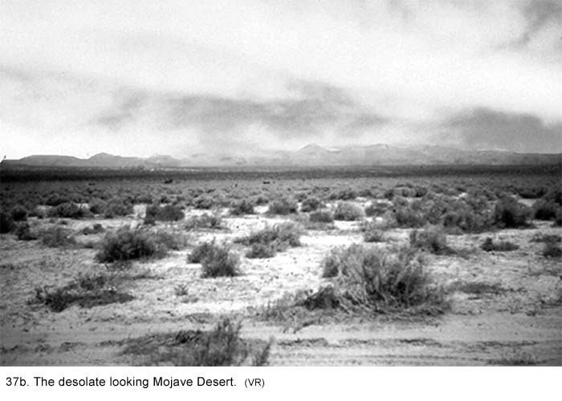 There wasn't a sprig of green anywhere to be seen, not even a cactus. It was as though the searing sun had bleached all of the color out of the craggy landscape. Mountains off in the distance rose out of the desert floor, but not even they could add any beauty to the desolute scene. They were not high enough to have snow on their peaks and there was nothing appealing about their appearance. Their dirty brown color made them resembled the Mesabi iron ore range in northern Minnesota I had seen in pictures. The only thing of any beauty in the landscape was the bright blue sky. The occasional small cirrus cloud offered no protection from the unrelenting sun. I commented on the scenery to Bapst. "It looks like my first effort at landscape painting in the fourth grade." "It must have been one lousy painting," he responded. The heat waves distorted everything as we looked off in the distance. It was unbelievably bleak and the heat was suffocating. Minutes after we unloaded from the trucks, Spearing-who hardly ever complained-sat down on the ground and held his head in his hands and said, "God, what a horrible place. What did we do to deserve this?" Other than the few GIs we had seen at the gate, there were no signs of human habitation. At first we thought we were the only outfit there, but we later learned there were other antiaircraft outfits encamped out of sight beyond some tents. Our first job was to unload all our equipment, set up our guns just outside the living area, and put everything in its proper place. The sergeants were prodding us to get to work, but everyone was so emotionally disgusted and physically drained, just walking around seemed to be all we could endure. How could anyone expect us to work in this heat? I felt like someone had opened a valve and drained all of the energy out of me. Some of us were just sitting on the sand or leaning against the trucks in the shade. Was this mutiny? One of the staff sergeants came down the row of trucks shouting, "Come on, come on, get a move on, unload those trucks. Get off your asses - now!" He was not having a lot of success until he began yelling, "That's an order!" followed by the names of individuals. Then the fear of authority kicked in. Let's see, which Article of War threatened a court-martial if we did not obey a noncom's order? It didn't matter, because the last article took over if the others weren't applicable. The threat of dire consequences was the catalyst that got us moving as we grumbled and felt sorry for ourselves. After unloading the equipment and setting up
the gun in a gun park, we moved our personal gear to the tents where we
would live. Each of us staked out our new home by taking over an Army cot.
Camp Irwin proper was row after row of sand-colored six-man pyramidal tents
with wooden floors (see Fig. 38a and 38b). Each tent had six cots with no mattresses
and one potbelly stove. We each brought two blankets with us so we laid them
on the cots to afford a little cushioning. The only permanent structures in
camp were the PX, fire station, mess halls, and latrines. 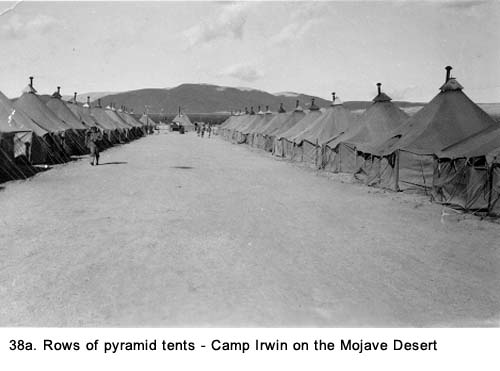 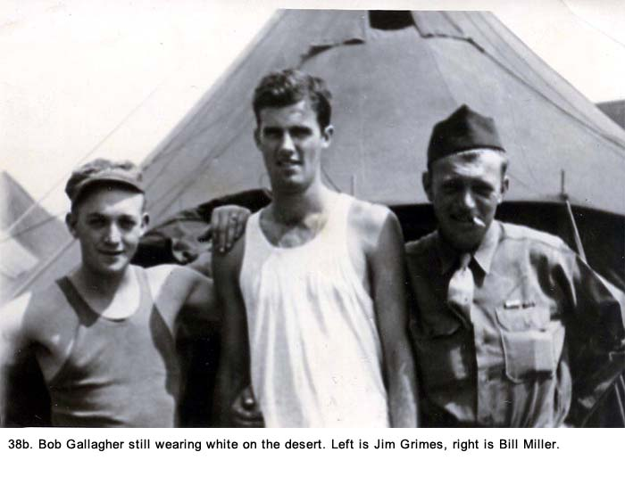 After stowing our gear, we sat on our cots, elbows on our knees, discussing our feelings of dejection. We contemplated what life there was going to be like. The feelings were all negative. But this was our new home, and there was nothing we could do about it. Before we could get too comfortable, we were called out into formation. We lined up outside the tents in the prescribed four straight lines and stood as the full blast of the sun's rays permeated our fatigue uniforms. I had never felt heat like that before. Several men in the formation swayed slightly as though they were going to keel over, but nobody fainted completely. On my way out to the formation, I had bumped into Charlie Knoch from one of the other gun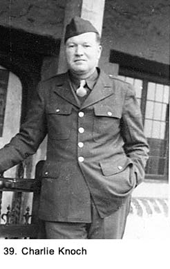 sections (See Fig. 39). He was one of the older soldiers in our outfit, and he was a good friend of mine. He had a stocky build and that soft look of someone who had spent most of his time as a civilian behind a desk. In fact, Charlie had a good job before entering service and was used to giving orders instead of receiving them. He often rode a fine line between keeping his mouth shut and telling an officer or a sergeant what he thought about him, or more specifically, about the order he had been given. The Army training had toughened him up a little, but he still looked more like an office manager than a seasoned soldier. Coming out of his tent that day on the desert, he looked like he was ready to explode. His cheeks were flushed from unloading the trucks and his eyes were glassy. He was a man of Irish heritage with minimal pigment in his skin. His nearly white complexion, with a heavy dose of freckles, could not tolerate even low doses of sunshine without getting severely sunburned. I had noticed how slowly Charlie moved into formation this first day. He shook his head from side to side when he saw me to indicate his disgust with the new surroundings. He was in the process of fashioning a nose guard from part of a package of cigarettes. It attached to his sunglasses, and, in addition to hiding his nose from the sun, would help hide the scowl on his face. I hoped none of the officers or cadre members would say anything to him in his present mood or there would be trouble. He probably realized this, too, because he took a position in the last row of the formation. I heard him mumbling several times when we were supposed to be listening, but it was quiet enough to not draw attention to him. When we were dismissed some time later, he and a lot of the rest of us headed to the latrine to splash water on our faces. It was the only place to get relief. Every time I saw Charlie while we were out in the desert, in addition to his home-made nose guard, he had zinc oxide smeared over his face, his neck, and the back of his hands. This helped some, but it was impossible to be completely protected. The desert with its glaring sunshine was unhealthy for all of us, but it was a real threat to guys like him. He really suffered while we were there. His overall dislike of the Army, now expanded by these unpleasant conditions on the Mojave Desert, was about to test his mental and physical resolve. It took several days before we began to adapt to the extreme heat. However, adapt doesn't mean living there became any easier. The griping we did the first few days eased up a bit, but would start up again as the training got harder. We went about our duties as we were told even though everything requiring physical exertion seemed harder to do. The extremely hot weather and stark scenery were accepted as fact, a fact we could do nothing about. We soon began to settle into the same kind of routine we had Camp Haan. We would lie around on our bunks during free time, reminiscing about the advantages at Camp Haan. How our outlook had changed now that we were living in the desert! The place that had seemed so miserable just a short time ago was now looked on with fond memories. Even though we thought things could not possibly get any worse, we were a long way from reaching the bottom rung of living conditions. From here on, it would be all downhill. In an effort to keep our tent from collecting the heat of the sun, we kept the side flaps rolled up at all times. At night, we rolled across our cots until our bodies were at the outer edge of the tent, hoping to grab some trace of a breeze. Usually, there was none. The brilliant stars and bright moon on some evenings were our only compensation. We lay there in only our shorts, thinking, tired from the day's work. It wasn't long before the tent was filled with the echoes of six snoring men. At daybreak and sometimes before, we awoke with our two wool GI blankets pulled over us to ward off the morning chill, but as the bright orange sun rose over the mountains, all signs of cool weather disappeared and the hot blistering heat took over again. The ability to get a good night sleep in the cool night air was one of the few good things about the desert. Another was the lack of flies or mosquitoes. They were smart enough to stay away from that environment. Rifle Practice on the Range There wasn't much to look forward to in camp except the expectation of finally firing our guns. This was an opportunity to participate in an adventure previously foreign to most of us. We were especially anxious to fire the M-1 rifles issued at Camp Haan. We cleaned them often, in preparing for when the time came. After several weeks, we were taken to a rifle range to qualify at gunnery practice. To avoid the midday sun, we got up at 0430 hours and ate our breakfast; we were on the range before sunup. 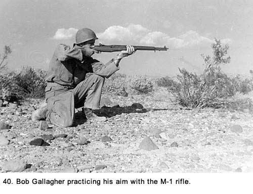 We could have slept another hour because we had to wait at least that long before it was light enough to see the targets. We lay and sat around on the sand in groups as we whiled away the time. One of the most frequently quoted expressions in the Army was, "Hurry up and wait." We were always in a hurry to get someplace, and then we would just stand or sit around waiting for something to happen. This was a common occurrence in our training. We always seemed to operate at one extreme or the other. Either we were moving at full pace or at a dead stop. When my turn to fire came up, I went to a prescribed spot on the firing line where an experienced soldier from another outfit was ready to instruct me (See Fig. 40). First, the leather sling attached to my rifle was loosened up, and then wrapped tightly around my right arm to give the gun more stability. The first rounds were fired from a sitting position, done in a prescribed fashion with my elbows resting on my knees just so. I was shown how to keep the rifle butt tight into my shoulder and told to hold my breath at the moment of firing. It was not a natural position, and, at first, it took some adjusting to get used to it. Finally, I was told how to line up the rifle's rear sight with the one at its tip and where the target bull's-eye should fit in relation to them. It seemed to take longer to get everyone set up to fire than did the actual firing. After taking so long, someone commented, "I hope if we ever get up against the Japs, they give us a lot of time to get ready." I wondered why we were using the leather sling. Certainly, it would not be used in any kind of combat condition. Finally, I was given a clip of ammunition that I loaded into the gun without putting a round into the firing chamber. About fifty of us were lined up in a row, and an officer checked to make sure nobody was between the firing line and targets. If anyone moved the gun even slightly while facing the target, someone immediately chewed him out. The lieutenant then shouted, "Load the chamber and release the safety clasps! Ready on the right, ready on the left, ready on the firing line-commence firing!" and we would fire a clip full (eight rounds) of ammunition at the targets, taking careful aim after each shot. The officer then yelled, "Cease firing and set safety clasps!" and we would all reload our rifles. We fired from the sitting, standing, and prone positions at targets two-hundred-fifty and five hundred feet away. Under the heavy smell of gunpowder and with our ears still ringing, we watched our scores being tabulated. I qualified as a marksman the first time. That was better than some who did not qualify at all, but it was not as good as others. There were two classes better than marksman: sharpshooter and expert, with expert being the best. Several days later, while some of the men were trying to qualify for the first time, I shot again and made expert that time. I also qualified with a carbine rifle and a Thompson submachine gun some weeks later. As part of our time out on the firing range, we took a turn working the targets while other soldiers were qualifying. We went out to the targets and down into a trench below where we were protected by an earthen berm from the firing. The targets were set up on a pulley system whereby we could raise them for firing, then lower them after to check for holes. We used a four-inch diameter black disc attached to a long stick to show the scorer where the bullet holes were located. If a shot missed the target entirely, we waved the disc back and forth across the target several times. This was known as waving Maggie's drawers. Despite an effort by one of the sergeants in the pit to keep the scores legitimate, some cheating went on while I was there. It wasn't an effort to help any individual because we did not know who was firing at our target, but some men took the scoring job as an opportunity to create devilment. "He missed the damned target three out of eight times-a real Sergeant York," the guy next to me whispered referring to the World War I hero who was known for his accurate shooting, as he was marking bulls-eyes and near bulls-eyes. When the shooting practice and target duty were over we headed back to our tent area. Although we had not done a lot of physical exertion that day, we were all dead tired when it was over. The simplest routine in the intense heat was enough to wear out even the most fit. Back at camp, we disassembled out rifles, cleaned the metal parts with gasoline, and lightly oiled them. We did basically the same kind of duty at Camp Irwin we did at Camp Haan, but now everything seemed to be done in slow motion. Everything was done under the full rays of the sun. There were no structures to shade a large group of people. Whatever we were doing, the sun was our constant companion. While we were all in great physical condition from our months of basic training, we did not have the same strength or endurance we did before coming to the desert. We were all running at something less than full speed. To protect ourselves from sunburn, we had to take drastic measures. We stayed completely covered up when the sun was at its highest. Soon, we all made makeshift nose guards out of cardboard like Charlie Knock had on the first day. Many men still had problems with sunburn. Some went to the hospital but they usually wound up with nothing but a tube of zinc oxide, the only medicine available. We all wore sunglasses, lip balm and fatigue hats with a brim. A few individuals with swarthy skin went from dark complexions to darker. They were the only ones who went around without shirts during their off hours. The rest of us stayed covered from head to toe whenever we were outside and nursed our sunburned necks, faces and hands. We wore blue fatigues the sun bleached several shades lighter. They had metal buttons that got so hot and they would burn our bare skin if we touched them. We finally found a method we thought would give us some relief during the worst time of the day, around noon. After lunch-or dinner as the Army called it-a lot of us would go into the shower room of the latrine and stand under the spigots with our clothes on to let the water cool us off. Then we would come out and stand in formation to start the afternoon activities without drying ourselves. It was a strange sight seeing a line of soldiers with steam rising from them. We would be completely dry in an hour or so. Finally they made us stop the midday showers, saying it did not look military, whatever that meant. After a few weeks in the desert, morale began to drop, and soon it was about as low as it could be. The griping picked up again, and we tried everything we could to get out of work. We heard temperatures would reach more than one hundred twenty degrees, but we never knew how official those were. There was a complete shortage of thermometers at this camp, which was probably not an oversight. What we did know for sure was it was hotter than any of us had ever experienced. In our spare time there was nothing to do, so we did a lot of horsing around. Some of it led to 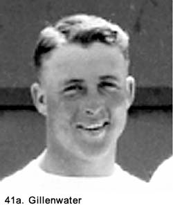some not-so-friendly fighting. I had several bouts with a fellow named Gilllenwater (See Fig. 41a) from another gun section. He had a certain swagger about him, but he was also very likable. We played on the same baseball team back at Camp Haan, and I considered him a friend if not a real pal. The adulation he had received in high school as a star football player had evidently gone to his head, and he frequently bragged about his athletic exploits. This wore quite thin with those who lived with him in the same tent but to the rest of us who saw him less frequently, it was just blowing so much wind. Although he was considerably shorter than me, we weighed about the same. The first fight started with an exchange of words, then escalated into a real donnybrook. I was passing his tent on my way back to my tent from the latrine. He was standing in front with a couple of his buddies. "Hey, Gallagher, you look like a big ugly orangutan," he spouted as he reached out and gave me a hard punch on the arm. He was smiling from ear to ear. "At least I'm not a sawed-off has-been of a football player, and keep your hands to yourself," I responded. "What's the matter? You can't take a little punch? I
thought the Army made a man out of you." "Come on Gallagher, let's see how tough you guys from Chicago really are. What's a big guy like you afraid or something?" I knew that my size was playing a factor in this confrontation. A competitive guy like him would enjoy showing that, despite his shorter stature, he could either back off a much taller guy like me or, better yet, defeat me in a fight. Also, he had come from a small town in western Illinois and his perception of large cities like Chicago was somewhat warped. I had heard him describe the big city as if there were gunmen roaming every street and crime running rampant. He had seen too many Hollywood movies with Jimmy Cagney and Edward G. Robinson playing gangsters. I had not told him the only guns I had seen before entering service were strapped to the waists of policemen. When I turned around to face him, he was still smiling like he was just playing around, but his actions told me he was quite serious. When he cocked his arm to throw another punch, I figured he had laid down the gauntlet and there was no other course open to me but to get an edge on him. Before he could jab me, I reached out and grabbed his head in an arm-lock and we spun down to the wooden floor. The wrestling match lasted about twenty minutes as we bounced off cots and the floor. There were long, agonizing minutes when we lay there locked in some kind of hold with neither one being able to move until one of us wrenched loose. Then it was more grabbing, twisting, tripping and locking up again. We spun around the tent again and again. I heard the snap of a wooden cot frame as we hit it on our way to the floor. Someone in the audience let out a whooping "whoa!" The stove was knocked over and the pipe leading out the top of the tent came down in pieces. Bedding, clothing, and equipment were scattered all over the place, and some of it was knocked out of the tent altogether. It was a heated battle! The men in the tent when we started moved outside to join the crowd that congregated. Bets were being taken who was going to be the winner. When we were through, the tent was in shambles. We had broken three wooden cot frames. Later, we would have to feed them into the supply room one at a time for replacements without the supply sergeant getting wise to what happened. The fight was the result of our boredom and the effort to do something besides lying around doing nothing. I felt I had won the fight only because I wound up pinning him down at the end. But I did not feel like a winner. I was black and blue all over, as I am sure he was, too. My whole body ached for days. Later I realized it might have been better if I had lost the fight. Gillenwater was one of those super competitive guys who could not stand to lose anything he was competing in. For weeks he continued to provoke me with jabs to the arm and other physical contact. We wound up in another fight. That one was not as severe as the first one, but I was getting pretty sick of this guy. I did not know how to get rid of him without completely subjugating myself to him. My pride would not allow that to happen. I had learned from the first fight he was not as tough as he thought he was. Things improved when he came down with an infection to his neck. It was the worst case of boils I had ever seen; he was laid up in bed for several days. He lost about twenty pounds over a couple of weeks while battling the infection and was quite weak from its effects. I knew he was not in fighting shape when men started to make fun of his condition without him responding. "Hey Gillenwater, that's the worst case of clap I ever saw," was a typical dig thrown at him. When he recovered, he seemed to lose some of his competitive nature and we went back to being friends. We had duties six days a week. Sunday was supposed to be a rest day but, even then, one of the sergeants would often come around looking for men to do some kind of a work detail. This led to most of us vacating our tent area for most of the day. Despite the fact there weren't many places to hide, we managed to find one. Several of my buddies and I would grab pocket novels and head over to the firehouse. We would lie in the shade of the building on the concrete ramp leading to the door and spend the time talking and reading. It was a few degrees cooler there because the concrete held some of the coolness from the night before. It was just one of the drastic measures we used to get out of work, and the minor relief from the heat was a bonus. Not too far from our camp were some small army tanks that we took some time investigating and playing around with (See Figs. 41b and 41c). They were known as the M3 and M 4 models. Originally used in the Philippine Islands and other locations early in the war they were found to be too slow, lightly armored and low in firepower. Their cannon was a mere 37mm and certainly would be no match for the German Panzer units that were considerably bigger in all categories. Obviously, these tanks were being stowed in the desert as unsuitable armored vehicles. 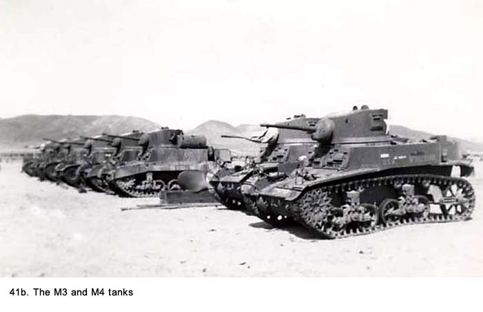 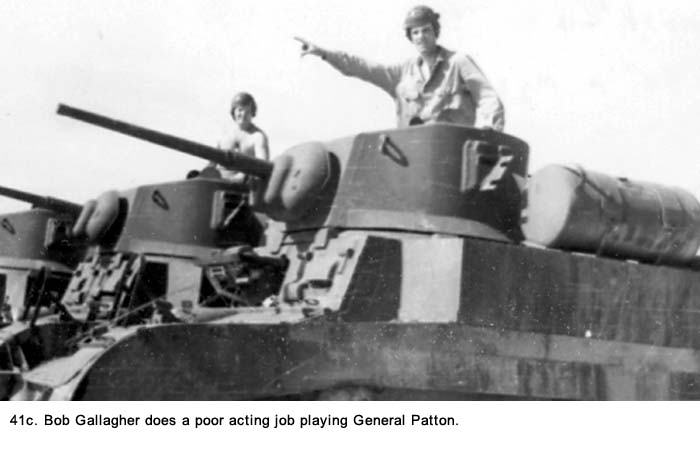 While on the desert, we took goldbricking to a new level. Men like myself who normally wanted to be good soldiers and played everything by the book were now taking evasive action at every opportunity to avoid work. We now made a game of trying to look busy when needed and to do just enough to avoid being chastised when observed. The desert heat brought out the worst in us: military efficiency wasn't a consideration. Since we could not do anything about the environment, the only way to compensate was to avoid physical activity at all cost. When
we were finally eligible for passes, we took the opportunity to get away
from special assignments dealt out on weekends. The only place we could
get to was the town of Barstow and we did not expect too much from it. On
our trip from Camp Haan to Camp Irwin, we had passed through it and seen
it had little to offer for amusement. It proved worse than anticipated. Barstow's downtown area (See Fig. 41d) consisted of one hotel, half a dozen taverns, a few little grocery stores, a post office and some uninteresting shops. There were ten GIs for every civilian, and it was just as hot there as in camp. We were on the lookout for girls our age whenever we were away from camp, but there were none to be seen in this place. It was a small desert town that could not absorb the influx of thousands of service men looking for something to do to get their minds off the daily grind of Army life. 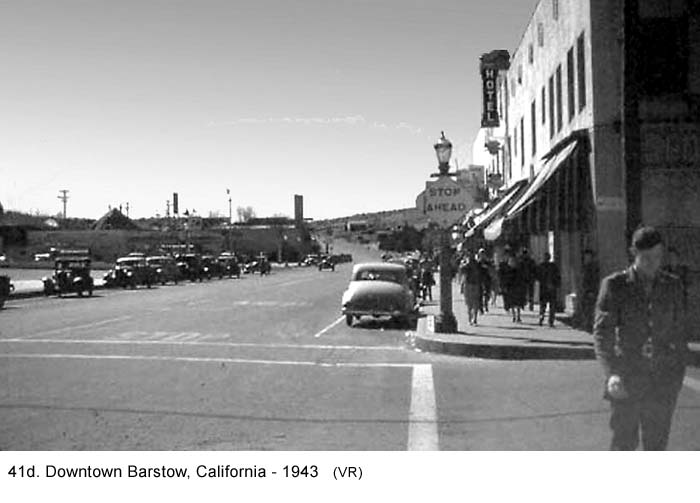 We walked into a storefront building with a garish neon sign in the window that said Bar with palm trees surrounding it. Who are they kidding with those palm trees? I thought. There isn't a palm tree anywhere to be seen. Inside the place was done up in western style. It could be called either quaint or just plain dilapidated, depending upon one's perspective. However, the one word that would best describe the place, dingy, could not be contested. The foul smell of smoke and stale liquor, accentuated by the hot stagnant air, was overpowering until you finally adjusted to it. The walls were covered with some of the mangiest stuffed animal heads I had ever seen. There were bears, buffalo, deer, rams, wolves, and some unfamiliar animals. Most of them had been hanging there so long they had picked up a heavy coating of dust, and the color of their skins had all taken on the same dull gray look. The walls hadn't been painted in decades, the floor was rough planking, and antique light fixtures hung from the ceiling. A couple fans oscillated slowly between the light fixtures but they did not move the air. Whatever the temperature was outside, it was at least another ten degrees higher inside. The bar was ornate, and the mirrored wall behind it was irregularly worn from age and heavily cracked. With just a little bit of imagination, one could envision some really violent bar fights had occurred in this joint over the years. We walked up to the bar and Grimes addressed the portly, sullen looking Mexican bartender, who was wearing a well-worn snakeskin cowboy hat adorned with pheasant feathers, snakeskin boots, a dirty blue shirt, and an even dirtier white apron across his pants. "Give us three beers," Grimes requested. "No beer, just tequila," responded the bartender as he wiped the bar in front of him. His large bushy and tobacco-stained mustache completely hid his mouth, giving him a walrus like look. He picked up the badly worn tin ashtray covered with chewing-tobacco advertisements. He wiped under it with new vigor. Despite the fact it was nearly overflowing with cigarette butts, he made no effort to empty it. The bar at this location did not need to be wiped but it gave him an excuse not to look at us. "Tequila!" Le Claire and I chimed in. I knew that it
was a Mexican drink but other than that, I had never been exposed to it.
The only description I had ever heard about it was that it was rotgut. "No whiskey, just tequila," he responded, still wiping the invisible spot on the bar. "Do you have Coke?" Grimes persisted, partly because he felt he was now in a contest of wills. "No beer, no whiskey, no coke, just tequila." the man retorted in disgust. Then he picked up his bar rag, continued to avoid our stares, and turned away from us realizing this was a no-sale. He knew we did not even know what tequila was. Looking down the bar we saw several Mexicans and half a dozen GIs. The Mexicans were obviously drunk, and the GIs were well on their way as they talked in near shouts to people standing right next to them. Everyone was standing and leaning on the bar; there were no stools. There was nothing but shot glasses in front of them with no sign of a wash. This was real man drinking going on and the patrons seemed particularly proud to be participating in it. Two GIs standing nearest to us were snickering in obvious delight listening to us amateurs in our conversation with the bartender. Farther down the bar there was one woman we had not seen among the soldiers when we first entered the saloon. She continued to be well hidden until we left. One GI was draped over her like a blanket. He was protecting a rare commodity in Barstow, a woman. We left there and proceeded down the street to another bar. "You know why they didn't have bar stools in that place, don't you?" I asked my buddies. Before they could answer, I gave them my answer. "It eliminates one thing that can be thrown in a fight after your brain gets fried from tequila." I also commented, "I wouldn't be surprised to see Sergeant Montelone and his cadre members back there in that joint. It had all of the class that they do." The second bar was packed with GIs to the point where we had to push our way to an open area. There was no waitress, which wasn't a surprise. First, there wasn't enough room for one to move around in, and second, what woman would want to squeeze herself through a hundred or so sex-starved, partially inebriated soldiers? It took us some time to get three bottles of Lucky Lager beer passed from the bar through many hands with the money going the opposite way. Just as at our first stop, there was no mention of furnishing proof of age so our fake ID cards remained in our pockets. We stood in a corner of the place and drank out of the bottle. It was ice cold and tasted great. Then we knew why the place was so crowded. What the three of us called hillbilly music was blaring from a jukebox across the room. The place was so noisy it was difficult to hear each other talk. There were pictures on the wall, including the one found in all low-grade saloons of dogs playing cards. The large room was filled with a thick cloud of cigarette smoke, but nobody complained or even seemed to notice. That's the way all bars were. The fans here did nothing but blow the smoke back down on the customers. The hot air, smoke, and strong beer smell mixture along with the crowded conditions finally became suffocating. We tried to move outside with our beers but as we hit the sidewalk, the town sheriff told us liquor was not allowed on the street. He was dressed in cowboy gear, and sticking out of his holster was a large pistol Grimes described as being "just one step down from being classified as a cannon." However, his manner was friendly when he said "Now you boys just take that beer back into the bar, ya hea?" I wanted to mimic the twang in his voice, but he looked like a no-nonsense kind of guy and I decided that prudence was a safer way to go. We pushed back inside and finished off the beers before leaving the tavern. Le Claire, who had a sarcastic wit, asked, "Having a good time?" Neither Grimes nor I responded. We saw no humor in his remark. Without knowing exactly what we were looking for, we proceeded to hunt for that mythical goal of a good time. We walked along the main street of town hoping to find something interesting. However, the barber shop, shoe repair shop, delicatessen, more crowded taverns, and the other small businesses along the way looked like any other little town in America. What was it we were looking for? What in the hell were we doing here? It would have been nice to meet some young girls we could talk to or flirt with. But if there were any available in Barstow, they were doing a good job of hiding. We were part of the giant mass of pathetic GIs desperately looking for a good time and finding nothing but boredom in small-town America. I, for one, could hardly wait to get out of there, but the first trucks back to camp were not leaving for several hours. We went back to the bar, had several more beers, returned to the trucks, and loaded up. We wanted to be sure we would be among the first to leave. There was no good time to be had in Barstow unless you were interesting in getting drunk at a faster rate than the 3-2 beer at the camp's PX could furnish. What we really wanted to do was go to Hollywood, but it was too far and difficult to get to. The memories of hundreds of beautiful sun-tanned girls lined up on the edge of the dance floor at the Palladium Ballroom just waiting to be asked to dance were like an unreachable oasis in our minds. While loading up, one of the men from our outfit who heard me complaining to Le Clare about Barstow asked me, "Did you visit the U.S.O. canteen?" "What canteen?" I replied. "I never saw one. How could I have missed it?" We always kept an eye out for canteens in any town we visited because it usually meant free food. "It was in the basement of the school. But, don't worry, you didn't miss anything - no dames," he answered. On the way back to camp, several men got sick from the drinking. They spent most of the trip with their heads over the truck's tail gate regurgitating. Le Claire commented, "There goes the tequila, and it hasn't even changed color." We were jostled around on the rough road and felt every bump because of the truck's hard springs. The effect on the kidneys sent many men to the rear to relieve themselves. We got another taste of dust, and there was little conversation. Grimes was lying on the floor sleeping soundly. Only he could slumber on a bed of steel slats and hard wood while being bounced about. We often kidded him about being able to sleep on a picket fence; the bed of a two-and-a-half ton truck was only a small step more comfortable than that. The ride back to camp was a fitting finale to a wasted trip. Back at Camp Irwin, the PX and outdoor theater were both crowded in the off-duty hours, with long lines at both. Neither was air-conditioned. However, we learned to appreciate them as a divergence from the tent area. The theater always had two long lines, one to buy tickets and the other to get in. We took turns purchasing the tickets for a bunch of us, which eliminated waiting in one line. Italian prisoners of war were held at this camp just like at Camp Haan. We would see them occasionally as they performed their work details. A rumor was going around they were allowed to go into Barstow on Thursday evenings to visit the bars. This was the kind of rumor that fed on itself, and soon the GIs were grumbling the prisoners were being treated better than the soldiers were. Nobody in authority ever confirmed or denied the rumor, and it finally died out. Some of us felt if visiting Barstow was being offered the prisoners, it was more like cruel and unusual punishment than a reward. The Army's Special Services put on one show with live entertainers while we were in Camp Irwin, and it proved to be a real embarrassment for me. It was held outdoors on a Friday night, so thousands of us sat on the sand and faced a makeshift stage set up for the occasion. When the actors came out on the stage at the beginning of the skit, we found out it was an all male cast. The lack of girls was a huge disappointment to us all because most of us had come just to see one. "Where are the girls?" and "We came here for this?" were some of the comments being hollered at the cast, along with a heavy dose of boos. The actors looked quite nervous. One of them tried to joke about the lack of females, but this only produced more boos. As the cast stood there, I recognized one of them as a guy named Ed Weiss who had been in several classes with me in high school. I made a big thing about knowing him to the friends I was with and to others seated near me. I made plans to go backstage and talk to him after the presentation. When the play started, Ed played the part of a fop with all kinds of feminine moves, and he wasn't good at it, either. In fact, the play was so bad they had trouble finishing it with the entire audience ridiculing it continually. "So that's your buddy, is it Gallagher?" "You must have gone to some high school." "Did you two go to prom together?" "Be careful when you go see him, he might kiss you." I felt like crawling on my hands and knees to get away. I never went to see Ed, and it took weeks before the ribbing died down. A Move To Pup Tent Living After
about a month in camp, our battalion loaded up everything and moved to a
valley about ten miles away where we set up a battalion camp. It was known
as the East Range. Other than our battalion with its equipment, there was
not a human being or man-made structure in sight. We pitched our two-man
pup tents in straight rows on the sun-baked sand for an extended stay (See
Figs. 42a and 42b). 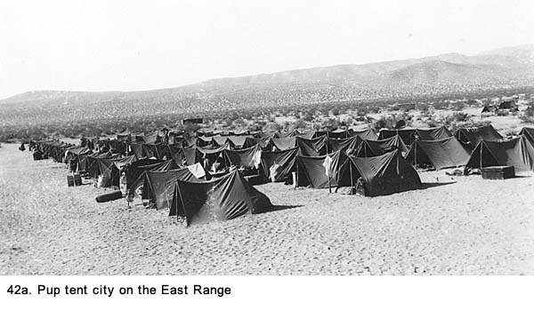
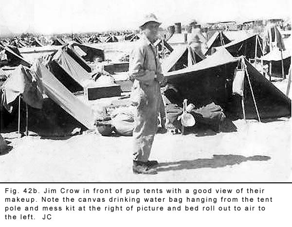 Each soldier had a canvas piece, called a shelter-half, four tent pins, and one pole as part of his gear. We each picked a buddy and put our shelter-halves together to make a complete tent. The finished product was triangular, about three-feet high, and six-feet wide at the bottom. It was held down with the wooden stakes, and one end could be buttoned closed. The other end was open. The floor area was just barely wide enough for two bedrolls, and we also squeeze in our duffel bags plus all our other equipment at the closed end. We could not even sit up in the tent because of the sloping roof. Because I was tall, my head stuck out the open end about six inches when lying down but, fortunately, it never rained while we were in the desert. Joe Bernal was my tent mate. Joe was from the Back of the Yards-the stockyards area-neighborhood in Chicago and was quick to inform me that he lived upwind of the yards. We were the same age and had a lot in common. We continued to wear uniform fatigues but switched from fatigue caps to helmet liners on some days. The liners gave less protection from the sun than fatigue hats and sunburned faces became a greater problem. Other items we wore every day were the gas mask (or the "goddam gas mask" as we referred to it) and a cartridge belt. The belt had pockets to carry clips of ammunition for our M-1 rifles, which were empty at this camp. It also had holes reinforced with metal around the bottom edge where a canteen, first aid kit, and bayonet scabbard could be fastened, with room for other items. In the desert, only the canteen was hanging from the belt while the gas mask strap was slung over our left shoulder and the mask hung by our side.
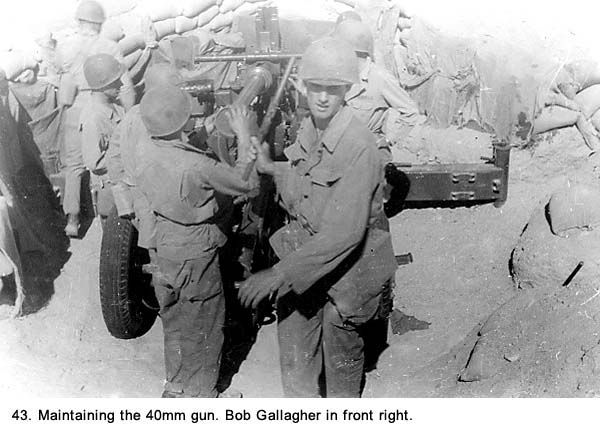 Gunnery Practice After several weeks of living in this pup tent city in the middle of nowhere, it was difficult to put up with the boredom. We were told we were there to take target practice with our 40mm and .50 caliber machine guns, but they took a long time getting around to it. We were out in the sun from sun up to sun down. The only shade available came from the pup tents, and they did not offer a lot of relief-the air inside them being hotter than the outside. Also, the shade they offered was not usually available to us because our duties kept us away from them most of the day. There were no passes given while we were there, and we were not even allowed to go into Camp Irwin to the PX or theater. Our whole life was centered on that auxiliary camp. Calisthenics were done early in the morning to avoid the midday heat; we played no sports because it took too much physical exertion. There was little to read, we had no radios, and they had a difficult time trying to find things to keep us busy. We repeated the same tasks of maintaining the 40mm gun (See Fig. 43), learning about our equipment, and studying aircraft identification (See Fig. 44) over and over again until we became sick of the repetitive routine.
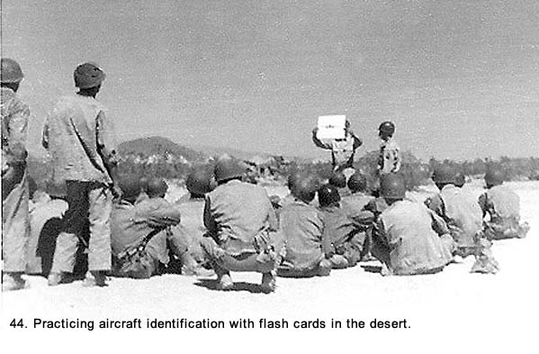 There was a large black tent set up as the kitchen. We stood in long lines at our D-Battery kitchen and the food was shoveled into our aluminum mess kits. The food was terrible because Sergeant Emerling was not visible in the kitchen tent. Rumor had it that he was AWOL again. The menu varied, but we could be sure that the dessert for dinner would be fruit cocktail almost every day. It soon went from being a real treat to something most men refused to take. We would sit around on the sand near the kitchen to eat, then stand in more long lines to wash our mess kits and utensils. The wash consisted of three metal garbage cans: one for the garbage, the second for washing and the third for rinsing. 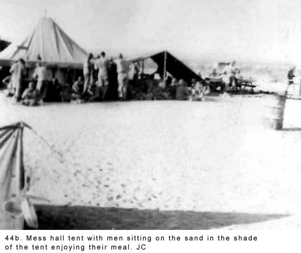 When in line to be served, there was always someone being goosed. This was one of those obnoxious habits that always seemed to feed upon itself whenever the men were bored. By this time in our training, the men who reacted the most vehemently had been selected for the most abuse. Some would wrench violently, and these men were usually targeted when they had their hands full with their mess kit and cup. They would throw their hands up in the air as the food and drink went sailing. Today it would properly be called abuse, but at the time, everyone except the victim thought it was a big joke. The ranking noncoms made no effort to control it. Sergeant Montelone kept us ever on edge with his foul-mouthed commands. He reached a new low while at this camp. One day while we were in formation he announced, "A new man is being transferred into our outfit, and he's a Jew." He then told us not to talk to him when he arrived. Was there no down limit to this guy's depraved mind we thought? None of us had given it any serious thought, but the few Jewish men we knew about were in Headquarters Battery. It never really meant anything to the rest of us what nationality or religion anyone was. The next day the new recruit arrived right after we had finished supper. We were all lying around on the sand near our pup tents, taking it easy. Taking it easy, that is, because there was nothing else to do or anyplace else to go. The new man checked in, then walked down between two of the long lines of tents. Nobody talked to him, and it was obvious he was aware he was being shunned. At the end of one line, he dropped his gear and got out his tent equipment. He was trying to devise some method of making a shelter but there was no way you could rig a tent out of one shelter-half. Joe and I were in the last tent across from where he was, and we started to talk to him. We learned his name was Melvin Felvarge, and he was about our age. We asked him if he wanted to share our tent, and he said yes. With his piece of canvas, we rigged it so our tent could sleep three. We found him to be a very nice guy, and we made a lasting friend. Joe and I had used up most of our conversation during the many evenings together so Mel rewarded us with some new subjects. We knew that Monteleone would be furious, but we wondered, how could that SOB be any more obnoxious than he already was? The next day, he did make some comments to me, but the whole incident soon blew over. Melvin was assigned to another gun section, he got another tent mate, and he stayed with our outfit for the rest of the war. With the extremely high temperatures, water was a problem. We drank a lot, and because there was no ice or refrigeration, what we were given was very warm; maybe you could call it hot. The aluminum canteen was carried in a cloth cover attached to our gun belt but we seldom used it. Each of us also carried a water bag we had bought at the PX. It was about fifteen inches wide and twenty-four inches high, made out of a canvas material with a rope handle for carrying over the shoulder. The water sweating through the canvas would evaporate which lowered the temperature of the water inside the bag about fifteen degrees. Water at one-hundred and five degrees is better than one-hundred and twenty degrees, but not much better. We filled the bags from a large rubber Lister bag held up by a tripod that sat out in the sun all day near the kitchen tent. The secret was to get there before the cooks loaded the bag up with chlorine purification tablets. The hot water was bad enough, but the addition of a strong chlorine taste made it even worse. Some men tried to reduce their water intake. They wanted to be able to go without water if we were sent to the desert in North Africa (actually, the Axis Armies had been driven out of North Africa by May of 19431 but most of us didn't know that) or the tropics of the South Pacific. I thought that this was a very dumb idea. I figured I would worry about going without when the time came and not before. 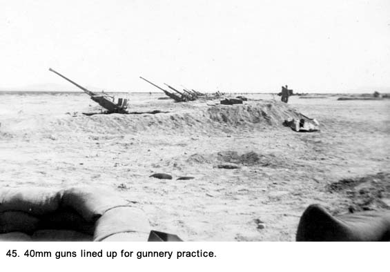 Finally, we were told we were ready for target practice with our 40mm guns. All the battalion gun sections dug pits in a row (See Fig.45) just outside our pup tent camp area. In keeping with Army tradition, we did nothing but sit around and wait for several days (See Fig. 46a and 46b). Then we were given live ammunition, loaded up the guns and were ready to fire (See Fig. 47a). Our gun was manned by Spearing in one tracking seat handling the crank that moved the gun horizontally (or azimuth as they called it). Bapst operated the crank that moved the gun vertically. Wellington stood on the platform, cocked the gun to put a round into the firing chamber, and loaded six-shell clips into a slot as needed. He fired the gun by stepping on a pedal on the platform floor. While firing at two rounds per second, he had only three seconds to get the next clip in before the gun ran out of ammunition (See Fig. 46). Stevens and Thomas stood on the floor of the gun pit and handed clips of ammunition to Wellington. My job as gunner was to stand behind the gun on the pit floor and direct the fire. I also had to hold a rope tied to Wellington's leg so that I could pull his foot off the firing pedal in an emergency. Once all the guns were ready, a plane flew down the lineup at an elevation of about 3,000 feet pulling a white cloth sleeve about three feet in diameter and twenty feet long attached to the plane with a long steel cable. The plane was piloted by women from a quasi-service branch of the Army Air Force called the Women's Air Force Service or WAFS, for short. Each of the four letter batteries (A, B, C, and D) with their eight guns each would take turns firing at the sleeve. Each battery had the tips of their shells dipped in different color paint so the projectiles that hit the sleeve would leave some color for identification. The firing was an exciting time with the crews moving in precision as they had been trained. The roar of the guns, the smell of gunpowder, and the overall action was a great thrill. To a bunch of young men, this was the ultimate fun. 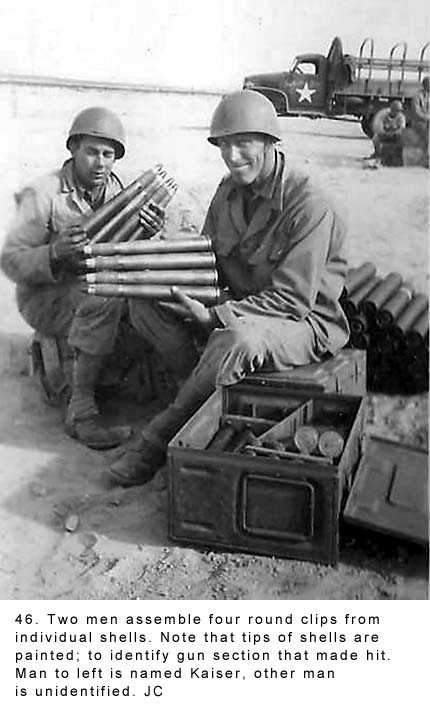 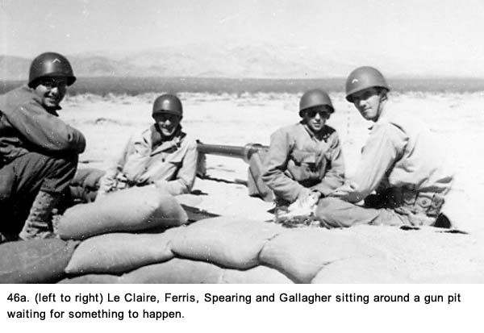 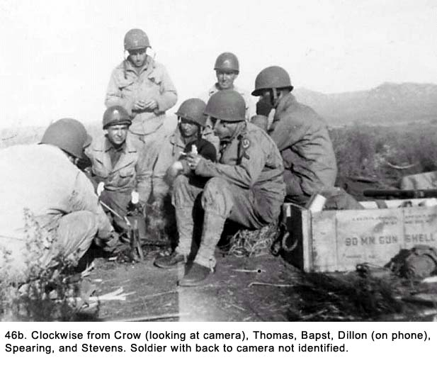 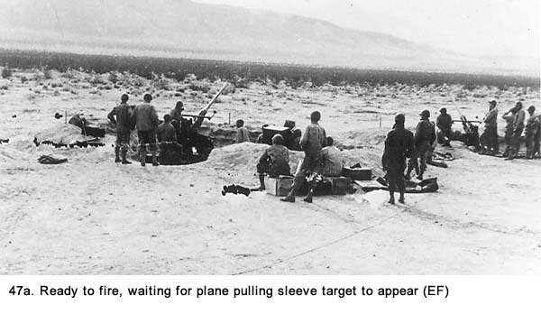 When the shooting ceased, the target was dropped and then examined so the number of holes of each color could be counted to determine each battery's score. The battery with the greatest number of hits would then have bragging rights as being the best shots. At least, that's the way it was supposed to work. As we continued having target practice on a daily basis, the scores seemed quite high, although we had no way to prove otherwise. Then, one day the tow plane dropped the target near our gun and we ran out to retrieve it. We counted five hits for the whole battalion. That did not agree with previous scores and it certainly wasn't many for the thirty-two guns doing the firing. Although we had only a quick look, we could detect paint only on one hole. About the last three feet of the sleeve was badly shredded from the wind and possibly a hit. A Jeep from Headquarters Battery showed up and the second lieutenant aboard took the target away to be evaluated. That evening we got the official score - twenty-eight hits. We wondered what was going on. We could have missed a few holes, but no matter how you counted, there wasn't anywhere near that many in the target we saw. We asked around for an answer but the only response we got was, "They made an adjustment for the part of the target that was missing." Obviously, someone was lying, but at that time we did not realize the significance of the padded scores. It would later prove of great importance in keeping our battalion together as an antiaircraft unit. In
addition to the target practice, where we used the hand cranks on the gun,
we tried our skill with the trackers operating the director (See Fig. 47b
and 47c). They would stand in a separate pit and look through scopes
mounted on each side of the director as they tracked the plane by moving
small cranks to keep the cross hairs on it. This method was touted as
being more accurate than visual sighting. We did not feel this was true,
but it was impossible to have an accurate comparison when the scores were
being manipulated. 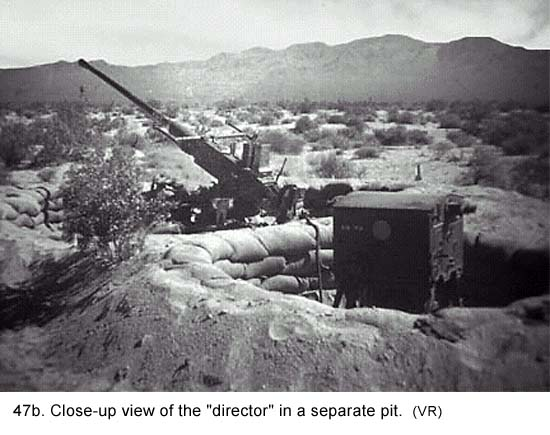
The director was serviced by a technician who had the rating of T-3-a staff sergeant with a "T" in the middle of his chevrons. He had been trained in the workings of this instrument. His job was the most envied in our battery because we considered it to be the easiest, and he had a high rank on top of it. All through our training we had watched him, as he seemed to be excluded from any type of duty even remotely resembled work. His uniform was always spotless, and he walked around with an arrogant air that riled some and made others jealous. When the director was not operating properly, we would send for the technician. First, he would berate us for doing something wrong even though he had no basis for doing so. Then, he would remove half a dozen screws on a steel panel located on the side of the director with all the concentration a doctor uses in surgery, look in with a flashlight, rotate the control wheels a couple of times, then declare "It has to go to ordinance." As far as we knew, he had never done anything more than add oil to a couple squeaking joints. Grimes and Le Claire kidded him once about his cushy job, and he got quite upset about it. Evidently, he felt he was performing a valuable service. Great safety precautions were taken to assure there were no accidents while we were on the firing line. Before we started to fire the 40mm guns, each crew had to dig a post-hole about four feet deep in front of each gun pit in order to have a place to put a shell if the gun fired but the shell did not go off. This happened to us once, and it created a very uncomfortable situation. When we opened the breech, we found the shell had been struck by the firing pin, which meant it was a faulty shell and was considered live. We had to pry the shell out of the firing chamber with a screwdriver, gingerly carry it to the hole in front of the pit, set it in carefully, then cover it with sand. After the crews of the 40mm guns fired, it was time for the .50 caliber machine gunners to take a turn shooting at the sleeve target pulled by the plane. Even though we had our new M-51 mounts available (See Fig. 48a and 48b) with their four .50 caliber guns, in this early stage of our training, we used the older single .50 caliber water-cooled machinegun (See Fig. 49) we still had available. The officers felt it would give the gunners a more hands on feel to the .50, help to develop their aiming skills, and let them get acclimated to the noise of live ammunition. 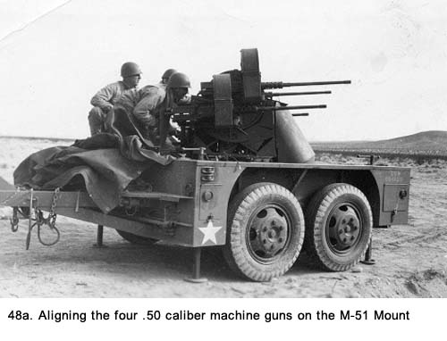
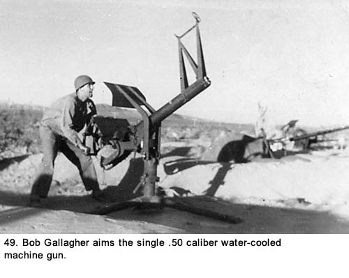 During this first time on the firing range, the man from our crew who was designated to fire caused quite a bit of excitement. His name was Red because of his flaming red hair. He was short in stature, exceedingly thin and easily irritated (See Fig. 50). He met the stereotype description of a hotheaded red head. An Army brat, he had been raised in camps as the son of a regular Army soldier. After we learned to live with his ticklish personality, he was a big help to many of us because he knew a lot about the Army routine. He had helped our crewmembers learn how to pass inspections, how to drill, and other fundamental things relating to our early training. On the day Red was to take his turn at firing, several of us commented how nervous he looked, but he was kind of a nervous person anyway and we passed it off as anticipation jitters. There was a rope tied to his right wrist; a sergeant held the other end. It could be pulled to get Red's hand off of the trigger if something went wrong, and something went very wrong. The target came by, Red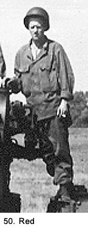 opened up and immediately panicked. He completely lost his sense of aim. He sprayed rounds all over the place and started to shoot dangerously close to the other gun pits down the line. He was using tracer bullets, which made it easy to observe his line of fire. The unaimed tracer streaks winding all over the area instead of heading toward the target looked unreal. For some reason, either the sergeant on the end of the safety rope did not pull Red's hand away fast enough or Red froze on the trigger. It was later concluded that by pulling the rope lightly the sergeant contributed to the erratic shooting. There was a big investigation about the incident, and even the pilot registered a complaint. Some men said shots came close to the plane. I did not see that because after I witnessed the first erratic shots, I, along with several others, was running toward Red from behind to tackle him. After the investigation, the sergeant had his stripes taken from him, and Red was transferred-he was still a private so they could not demote him to a lower rank-to permanent kitchen duty, where he spent the rest of the war. It was sad to see Red standing behind the food containers in the mess hall, dishing out chow to the men. He would have a dejected look on his face and his usual response to "Hi, Red!" was a curt "Yeah" as his eyes dropped down to look at the pan from which he was spooning food. When he was with our gun crew, he had been a big talker, but, in the kitchen, he barely spoke to his ex-crew members. Red became quite despondent because he felt he had let his military father down. A fellow named Cogdill was assigned to our crew replacing Red. Gunnery practice was more than a little interesting and exciting. It kept the adrenalin rushing and we were sorry when it was over. It meant we would be going back to the boring life we had been living. The combination of the extreme heat, the desolate look of the landscape, and the fact there was absolutely nothing to do in our spare time continued to make living in the pup tent camp a real drag. We played some cards and did a little reading, but mainly we sat around and talked. Occasionally, a crap game would break out, usually right after payday (See Fig. 51). 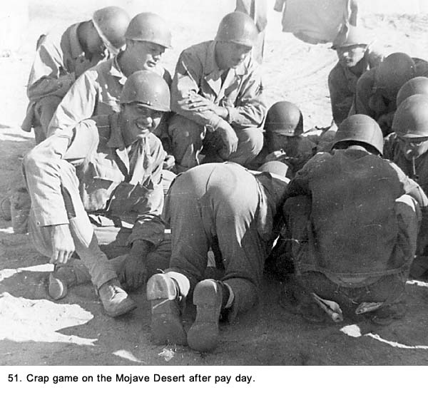 At night, before going to bed, we would shake out our bedrolls and blankets. There were a lot of scorpions about, and they stung a number of men. They would crawl into our bedding during the day while we were away from the tent area. Their sting would not usually kill, but its venom could make a person violently ill. After watching the reaction of several victims, we all took great pains in avoiding scorpions. The other living creatures we had about were very large jackrabbits, rattlesnakes, and tarantulas. We marveled at how they could survive in this hostile environment. At night, we would lie in our tents with our heads at the open end, looking at the most desirable view of the desert, the star-laden sky. Along the ground, the sagebrush would capture the moonlight in its scraggly shapes, and out farther would be the outlines of many jackrabbits with their huge ears like antennas silhouetted against the sky. We commented they were like an invading army waiting for us to go to sleep before advancing. We saw rabbits only at night and, even then, only in silhouette. It was so quiet in the pup tents we could hear our watches ticking. Another oddball activity we practiced because of the dearth of meaningful duties or entertainment was capturing snakes. We said you could distinguish which men were Rebels and which were Yankees when you heard a rattlesnake. The Yankee would run from it, and the Rebel would run to capture it. A few Rebels would defang the snakes and wear them around their necks like trophies. Most of us debated about the guys who would stalk and capture rattlesnakes. Were they brave or crazy? The morale of the troops finally got so bad the command decided to do something, and we were given a two-hour siesta every day after lunch. I'm not sure if it was an effort on their part to pacify us or if they just could not find anything to keep us busy in this godforsaken place. During the siesta we would cover our faces with our fatigue caps and lie around in or near our pup tents talking as the sun beat down on us. Also, they started to bring out an ice cream truck in the evenings, a couple of times a week. The driver sold only vanilla pints. Most of us ate one or two of them. There were always some men who would down four or five, and contests would develop to see who could eat the most. Living Conditions Continue To Get Worse We thought we had reached the bottom rung of Army life, certainly in training, but we had one more step down to go. While leaving the pup tents where they were, we loaded up our trucks, hitched the 40mm's on the back, and headed deeper into the desert. We did not take the M-51 mount. After dropping our fifteen-man gun crew and equipment in the middle of a valley, the trucks drove off. Jeep brought our two drivers back to our gun position. When the Jeeps left, there was not another person or man-made thing in sight except our crewmembers. The visibility was for many miles. Another negative factor-complete desolation-had been added to the hostile environment of our living conditions in the Mojave Desert. The entire crew just sat there on the sand for hours trying to comprehend what was going on (See Fig. 52). Why were we here? What was the objective? How long would we be there? 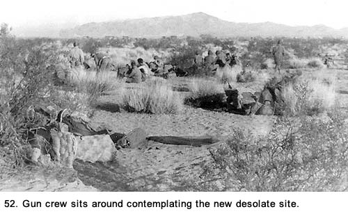 We dug a pit for our gun, and then we just milled about under the scorching sun in disbelief. Spearing and I sat in the trackers seats and pretended to be aiming at enemy planes while Armbruster took our picture (See Fig. 53). 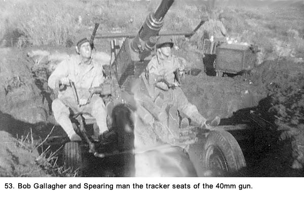 We looked at the sparse landscape with the heat waves distorting the view and wondered, as we had on the first day we arrived at Camp Irwin, what we had done to deserve this. Even back at the pup tent camp we could move about a bit to visit with other men, but here we were alone. There was no duty to perform and no instructions being given, so we just sat there doing nothing. (See Fig. 54) Our thoughts ranged from self-pity to rage aimed at authority, any authority. Tempers became short, and we had more disagreements among our crewmembers there than any other place before or after. 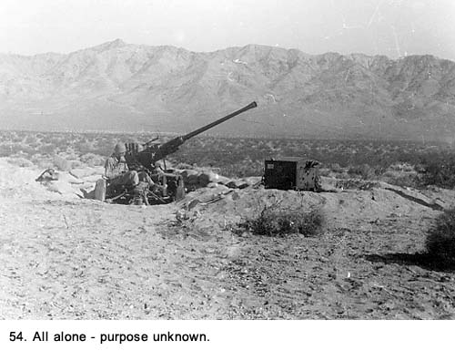 While the sun was going down on the first day, we laid out our bedrolls on the sand (See Fig. 55). Suddenly, Armstrong yelled there was a nest of tarantulas next to the gun pit where he was about to lay his bedding. We killed several of them, but others got away. Some of them looked as big as my fist. Their ugly, hairy appearance repulsed us to the point we actually dug a hole and buried the ones we had killed to avoid having to look at them. Until that time, we had considered rattlesnakes to be the nastiest things we had encountered on the desert but these spiders had even greater shock value. That night no one slept on the ground, but with the trucks gone, we did not have too many places to go. Two of us slept on the gun seats, two more on the steel gun platform, two on the halves of the director box, and the rest on top of the sand bags around the gun pit. All locations were extremely uncomfortable and we wound up talking through most of the night. 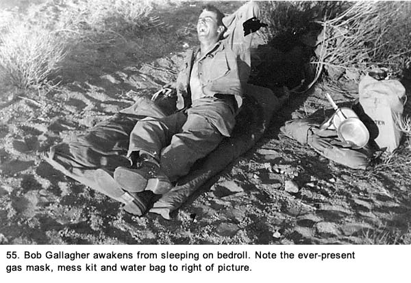 The next day, the wind kicked up and the sand began to blow. It was not a real sand storm, but it was enough to bother our eyes and, after a while, we could feel sand grinding between our teeth. We huddled for most of the day in the bottom of the gun pit, around the outer edge. It was a strange site, all fifteen members of our crew lined up as we griped and contemplated what was going on. "What do you suppose the purpose is in our being here?" asked Armstrong sarcastically. "Do you think that there is some military objective that is not apparent to us?" "Sure, there's an objective," Grimes said. "The Army wants to make bastards like us as miserable as possible, and they keep coming up with new ways to do it. I'll bet that Montelone and his flunkies are back at Camp Irwin right now having a good time and figuring out what to throw at us next." "They're going to have to work overtime to beat this hell hole," Bapst said, "but that doesn't mean that they aren't trying." The grumbling kept up for some time as we cursed the Army, the officers, and the noncoms. We blamed anyone we even suspected had something to do with our predicament. Even the deadly tarantula spiders that had caused such concern the night before were moved down on our list of distasteful things we commented on. We were blanketing anyone and everyone who had authority over us. We could not or, at least, we did not eat while the wind was kicking up so when it finally let up, we scrambled out of the bottom of the gun pit to heat up the cans and eat some C-rations. After the long absence of food, even these rations tasted good if not fulfilling. We stayed at this site and ate rations for three days except for one meal. Emerling showed up, without his stripes, on the back of a truck to serve us one hot meal from large thermos containers (see Fig. 56). He had just come back from being AWOL and had been reduced from a staff sergeant to a private. Since he was without rank, Le Claire took the opportunity to chide him about the food being cold and Emerling wasn't too happy about it. He was a temperamental chef and did not take well to criticism. 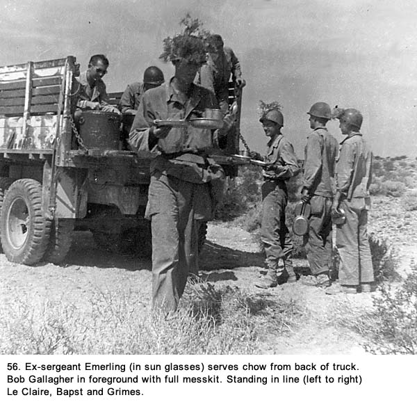 Someone described the movements of our outfit to different camps and gun sites that led us to this valley as the steps down into hell. We all thought that was an exaggeration, but not much of one. Starting out in Camp Haan in sunny southern California with a nearly perfect climate, we went to Camp Irwin in the oppressively hot desert, then to the pup tent city with more of the same heat but none of the meager luxuries of life like a PX and theater, and finally this experience with our gun section alone in the middle of the unbelievably desolate valley. Each new location had been a downward step in living conditions. One thing we were sure of: it would be difficult to get much worse than where we were unless they imported some Germans or Japs to start shooting at us. When several of the men commented they were beginning to understand what General Sherman meant many years prior when he said, "War is hell," Armstrong replied, "Yeah, and we haven't even been in the war yet." Of all the negative things about this site, the worst was the intolerable inaction. It sometimes felt as though time was standing still and we were locked in some kind of a vacuum. Regardless of how you described the location, you could never properly define the miserable living conditions and the lonesome feeling we had there. Finally the trucks returned. We loaded up and drove back to the pup tent city. We never did learn the purpose of our spending time in that valley doing absolutely nothing, and, as usual, nobody offered any justification for it. Not that we needed much reinforcement, but we all started to hate Army life really bad. We started to frequently ask the question, "How do I get out of this chicken s--- outfit?" After another short stay in pup tents, we loaded up again and went back to Camp Irwin. Compared to where we had been, that camp was a big step up. The showers alone made everyone feel better because we had not had one in about a month and washing out of helmets was not getting the job done. We were all pretty gamy. It was amazing how our attitude toward Camp Irwin had changed. When we first arrived there, we thought it was about as bad a location as you could get. After being out in the pup tent encampment and the trip as a lone gun section in a valley, it did not seem nearly as bad. There was even a lot of light-hearted bantering among the men as the morale greatly increased. We looked on the trips to the PX and movie theater with great delight. We continued to train. We were put through several kinds of obstacle courses. Some, such as jumping and climbing over hurdles, were to test our endurance. Another proved more sobering if not scary. One evening, we were taken to the camp's infiltration course where we had to crawl on our stomachs while carrying our rifles across our arms and wearing a steel helmet. There was barbed wire stretched about two feet above the ground. A .30 caliber machine gun was firing over the top of that, and explosives were going off around the site. When I was about halfway through the course, my fatigue jacket got caught on the barbed wire and I had a difficult time getting it loose. The men behind me were yelling because they wanted to complete their run as quickly as possible. I wanted to get loose without rising up to disentangle myself. It was a moment of fright and I wound up tearing myself loose. The whole experience wasn't much fun, and we were all glad when it was over. In any unusual training exercise, there was always someone who would make fun of it and ridicule how some of the men had fared performing it. This was the exception. Everyone seemed to take it quite seriously. The feeling of fear was something new for us all. Even though we tried to show brave faces, the machine gun and explosives gave us a new reality of what war was really like. It was just a small taste, but it did get our attention. We spent one day at the three-story debarkation tower, climbing down nets while we carried our rifles and wore a light field pack. The nets were made of woven rope and were the kind used to transfer troops from large ships onto assault type boats. I found it extremely difficult to climb down these things and hoped I would never have to use one again. I finally went over to the tower several times to practice (See Fig. 57a and 57b) but it did not seem to get any easier. 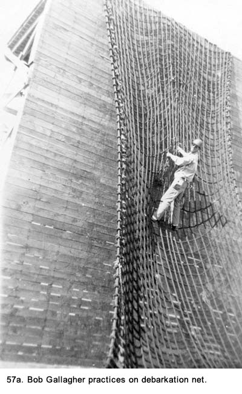 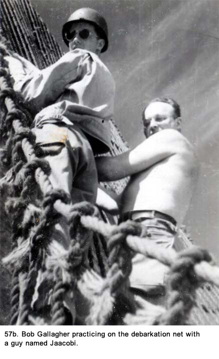 A Soldier Named Lenny An incident occurred while we were in Camp Irwin after our first pup tent experience that could best be described as a fulfillment of our dreams. The story starts back at Camp Haan when a new soldier was transferred into our outfit. We were told he had just been released from the military prison in Fort Leavenworth, Kansas. We did not know what he had been in for, but it's a prison for only serious offenses. Is this where they send ex-cons, to join our Battalion? we asked ourselves. He was a big, raw-boned guy who weighed well over two hundred pounds and stood about six feet, two inches tall. He was badly stooped over with drooping shoulders; walked with a slow gait with his arms barely moving, and talked to no one. His face was contorted into a continuous scowl. His fatigue jacket was as big as a tent and its arms hung to the middle of his palms. Either he didn't give a darn about the fit or he was trying to make some kind of a statement. His posture, size, and ill-fitting uniform made him stand out like a sore thumb. We called him Lenny behind his back because he reminded us of the doltish character in John Steinbeck's novel, Of Mice and Men. We were all afraid of him because he looked like he could get really nasty and the only people we knew of who had been in prison had notorious names like Capone and Dillinger.
After we had been there for about five minutes listening to his tirade, one of the staff sergeants flushed Lenny out of his tent. Everyone else was still at rigid attention. Instead of hurrying into the formation, Lenny slowly meandered over to the end of the first row of soldiers and stood there in a stance not even remotely resembling attention. I was in the row behind him and a couple of spaces to the side. I could smell trouble brewing, although I was not prepared for what finally happened. He was still buttoning up the front of his oversized fatigue jacket with all the casualness of someone oblivious to what was going on around him. He wore the usual dour expression on his face. His leggings were nowhere to be seen and his shoes were untied. Monteleone was speechless as he watched for the minute or two it took Lenny to complete his buttoning task. Then Monteleone walked over to him and put his face in Lenny's and began to shout at him. With Moneleone's short stature he was looking almost straight up while Lenny's curved body arching over the master of filthy language. In between the curse words, Monteleone was telling him to stand up straight and assume the position of attention. Although Lenny was probably only in his late
twenties, he was so stoop-shouldered I don't think he was capable of
standing erect. Suddenly, Lenny smashed Monteleone in the face with his
fist, knocking him to the ground. Then he pounced on him, throwing punches
with both fists. From the sound of the blows, it was obvious that some
real damage was being done. There was a lot of commotion as other
high-ranking noncoms came to Monteleone's aid. Lenny hit them also. Actually, we saw Lenny several times after that on prison work details back at Camp Haan where he was being held in the camp stockade. He could have been there awaiting a court martial. We never did find out what finally happened to him. The soldier-prisoners, like Lenny, wore fatigues similar to ours only a dark blue color. We commented facetiously that at least his new uniform fit him better than what he had worn while with us. That prison garb had a large white P stenciled on the back of the jacket and the prisoners were called yard birds. But Lenny was no yard bird; he was our hero. Soon after the fight, we packed up and went back to Camp Haan. We had an exciting time on the trip back. A few miles out of Camp Irwin, our truck got a flat tire so we stopped while the convoy went on ahead. It was one of the many tire problems we would have over the months we were in California. After fixing the flat, our truck moved once more. As we climbed into the mountain pass, we were in low gear and the truck strained under the heavy load. When we reached the mountain peak, the driver, Grimes, was supposed to leave the truck in the lowest gear so the gears would be available for breaking, if necessary, on the trip down. (State police were often stationed on motorcycles near the peak to assure the civilian trucks met this requirement but they had no authority over army vehicles.) Instead, Grimes shifted into high gear and we began the downhill run. The traffic was light. Because of a governor, the maximum speed of a two-and a-half ton truck was sixty miles-per-hour on a level surface, but on a steep downhill incline and with a very heavy load pushing us along, we soon passed that limit. We crewmembers felt we were far exceeding a speed where Grimes could control the truck. It was a winding two-lane road, and as we rounded a turn, there were two tanker trucks about one-hundred-fifty feet ahead of us, in our lane, creeping down the hill in low gear. We could not have stopped in five times that distance. The only alternative, to running into the back of them was to move into the left lane and go around the tankers. This we did. The distance from one end of our assembly to the other was more than thirty-five feet. We had the length of the truck, a long draw bar, and the gun itself lined up in a row, and they all had to clear both trucks. We were still accelerating, and it felt like we were doing a hundred miles per hour. There were no cars in the oncoming lane until we were almost past the lead truck. Then we spotted a car headed toward us. It scraped along the guardrail as the driver made a desperate attempt to keep from getting hit head-on. Grimes swerved back into the downhill lane before he wanted to, narrowly missing more oncoming traffic also pinned against the guardrail. The flash protector at the end of the barrel of the gun just clipped the cab of the lead truck. We kept going, screeching around curves in the road until Grimes was able to slow us down to a more sensible speed. Back in camp, we found the flash protector was slightly dented and had red paint on it. We cleaned off the paint and did our best to fix the dent, with no success. It wasn't until several weeks later anyone noticed it. We claimed we had no idea how it happened. Camp Haan seemed like a four-star luxury hotel compared to the places we had been in the desert. We said we would never gripe about conditions there again, but we did. It took only a few days before we started to do so as we continued our training. After a year in California, those of us who were eligible were awarded Good Conduct Medals. They went to anyone who had not committed any serious offense in the previous year. The cadre members managed to deflate any minor amount of pride we had in receiving our first army medal. They described the award in their usual crass manner by saying, "You have to have avoided getting the clap (a social disease) during that time," to be eligible. We took the medal and the ribbon; and put them away with our gear. There was an unwritten law that we would wear ribbons only when we had three of them and we were still a long way from that goal. We knew anyone wearing the ribbon for a Good Conduct Medal alone would be laughed at unmercifully. We started a volleyball team (see Fig. 57c) to play other battalions in camp. 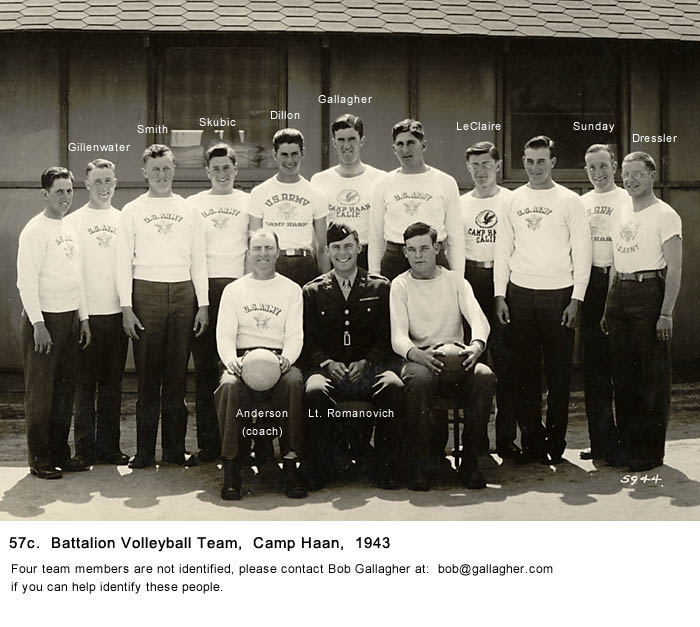 We had all played a lot of basketball, so the transition to volleyball was easy for us. Our coach, Andy Anderson was one of the older members of our unit and considered more a father figure by the younger men. He had experience in coaching, and he developed us into a very good team. Andy did have one quirk. He thought that Coca Cola had some kind of therapeutic value and insisted we drink some before every game. "It cleans out your system and gives you hidden energy," he would say. We didn't believe it for a minute but we did enjoy the Coke, especially since he paid for it. I had never played volleyball before entering the Army but I had a lot of fun doing so, especially when we started to win every game. Later we would take a bus to play teams at other camps and at March Air Force Base across the road. We also played softball, but it was twelve-inch fast pitching with gloves. I found out the sixteen-inch slow pitch game I was raised playing was exclusively a Chicago area sport. We had a great twelve-inch pitcher so we spent most of the time during the games just standing there watching him strike out the opposition players. We
made two more trips to the Mojave Desert for gunnery practice. Each time
things 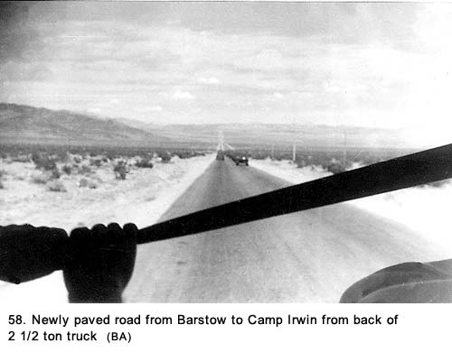 Also,
when we went out to the range and lived in pup tents again, they set up a
wash house (See Fig. 59a) so we could take showers. These little amenities
meant a lot as we grasped for ways to make living there more
comfortable. 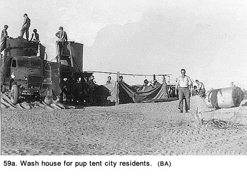 During one of these later trips, we found that the desert can get cold. There were times when we wore our wool OD uniforms under fatigues to protect against it. Wool hats and overcoats even showed up on some downright cold mornings (See Fig. 59b & 59c). 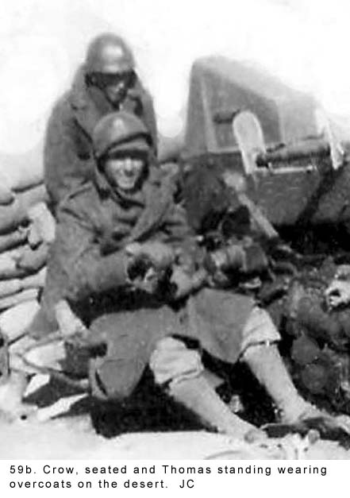
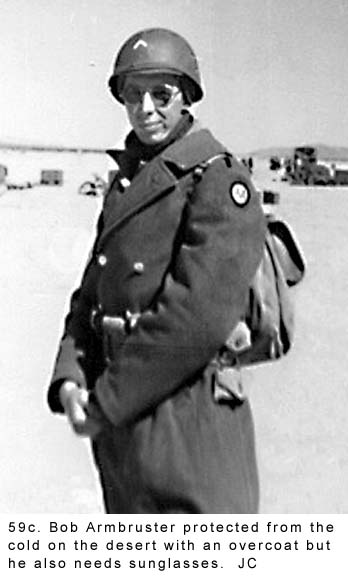 I had adapted to Army life. I really did not expect much good to happen to me and the worst part was, it did not seem that important. It was just a matter of doing my job, staying out of trouble and, enjoying whatever small pleasures, like participating in sports, that were available. However, I had one great longing on my mind that had to be resolved before I could be at peace with myself. Chapter 7 < - - - next Table of Contents < - - - return
Footnotes and Source of Photographs. Copyright, Robert F. Gallagher, 1999 - 2015, all rights reserved on all images and content.
|